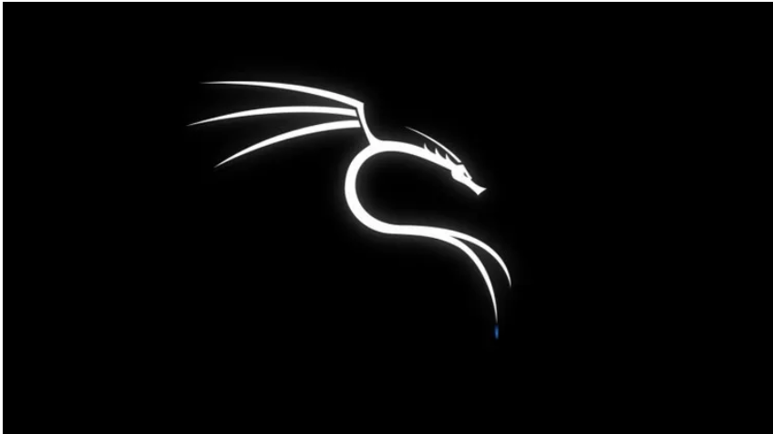

I like to be called Madede because the name reminds me where I came from and keeps me motivated. I am a Tanzanian First Year Student at the University of Dar es Salaam pursuing a BSc in Computer Science. I am interested in Cybersecurity and Blockchain Technology. Sometimes I wonder how Bitcoin transactions happen without bank involvement and how transactions become legitimate. This curiosity pushed me toward Blockchain technology.
My interest in cybersecurity started from wanting to understand how unauthorized access to systems actually happens.
Understanding safe online behavior, password management, phishing awareness, and protecting personal information.
Ability to collaborate effectively with team members and contribute toward common goals.
Basic understanding of decentralization, consensus mechanisms, cryptocurrencies, and smart contracts.
Experience with C Programming, Java, HTML, and basic Python development.
| Level | School | Year |
|---|---|---|
| University | University of Dar Es Salaam | 2025 - To date |
| A-Level | Fountain Gate Dodoma High School | 2023 - 2025 |
| O-Level | Mwananchi Secondary School | 2019 - 2022 |
| Primary | Kilimahewa Primary School | 2012 - 2018 |
It gives me quick and easy rewards and takes my mind away from stress, pressure, and overthinking during busy days at school. When I have spent many hours studying, solving assignments, or working on projects, scrolling through social media or interesting content helps me relax for a short time. I enjoy discovering new ideas, learning about technology trends, reading people's experiences, and keeping up with current events around the world. Although I know that too much scrolling can become distracting, I try to use it in moderation as a way to refresh my mind before returning to more productive activities.
I feel like I am allergic to dust and poor arrangement. Because of this, I always make sure my environment remains clean, organized, and comfortable. I enjoy arranging books, files, and personal belongings in a way that makes them easy to find whenever I need them. A neat environment helps me concentrate better, reduces distractions, and makes studying more enjoyable. I believe that maintaining cleanliness is not only good for appearance but also contributes to productivity, discipline, and peace of mind.
Although I am not among the biggest movie fans, watching Hollywood movies makes me feel that almost anything is possible, even when the stories are fictional. I enjoy movies that involve technology, action, adventure, and problem-solving because they often introduce creative ideas and different ways of thinking. Sometimes movies inspire me to learn new skills or explore topics that I had never considered before. Watching a good movie is also a great way to relax after a long day of studying and academic work.
